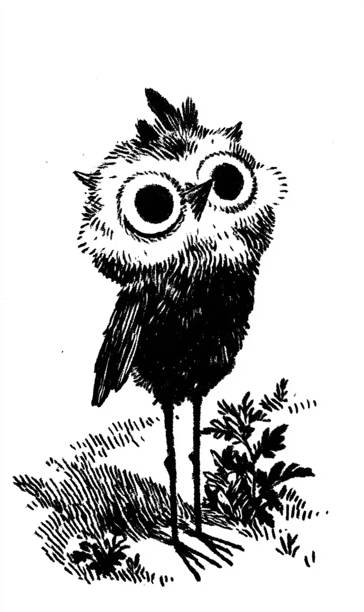

풀숲에서 작은 부엉이 한 마리가 지유를 올려다보았다.
[In the grass, a small owl looked up at Jiyu.]
다리는 가늘었고, 눈은 너무 컸다.
[Its legs were thin, its eyes too big.]
“엄마가 없구나.” 지유가 속삭였다.
[You have no mother, Jiyu whispered.]
그녀는 부엉이를 품에 안고 집으로 데려갔다.
[She held the owl close and carried it home.]
이름은 보리라고 지었다.
[She named it Bori.]
매일 밤 지유는 지렁이를 잡아 보리에게 주었다.
[Every night Jiyu caught worms and fed them to Bori.]
보리는 그녀의 어깨 위에서 잠들었다.
[Bori slept on her shoulder.]
지유는 보리가 영원히 자기 곁에 있을 줄 알았다.
[Jiyu thought Bori would stay by her side forever.]
몇 달이 지나자 보리는 두 배로 커졌다.
[After a few months Bori had grown twice as large.]
깃털은 검어졌고, 부리는 단단해졌다.
[Its feathers darkened, its beak hardened.]
어느 밤, 지유는 가슴 위에 무게를 느끼며 깨어났다.
[One night, Jiyu woke feeling a weight on her chest.]
보리가 그녀를 내려다보고 있었다.
[Bori was looking down at her.]
커다란 눈이 달빛에 빛났다.
[The huge eyes shone in the moonlight.]
“보리야.” 그녀가 미소 지었다.
[Bori, she smiled.]
부엉이는 고개를 천천히 기울였다.
[The owl tilted its head slowly.]
그리고 부리를 그녀의 눈으로 향했다.
[Then it turned its beak toward her eyes.]
사랑은 본능을 이기지 못했다.
[Love could not defeat instinct.]
지유는 비명을 지르지 못했다.
[Jiyu could not scream.]
다음 날 아침, 창문은 활짝 열려 있었다.
[The next morning, the window was wide open.]
지유는 어둠 속에서 엄마를 불렀다.
[Jiyu called for her mother in the darkness.]
더는 아무것도 보이지 않았다.
[She could see nothing anymore.]
멀리서, 부엉이 한 마리가 길게 울었다.
[Far away, an owl cried a long cry.]